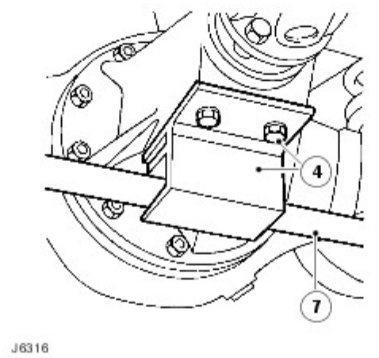
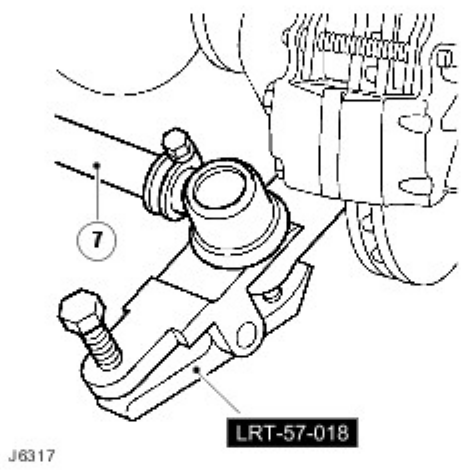
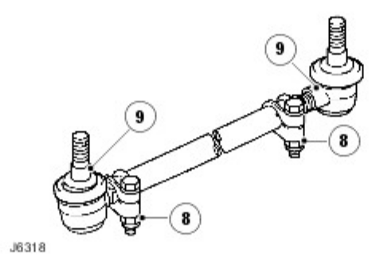
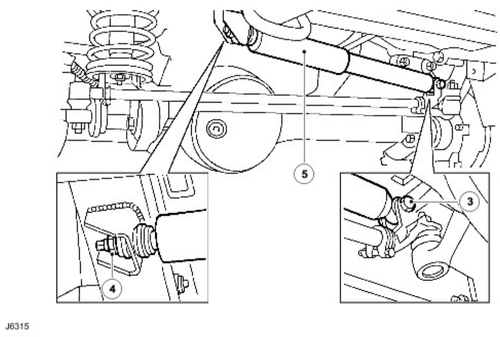
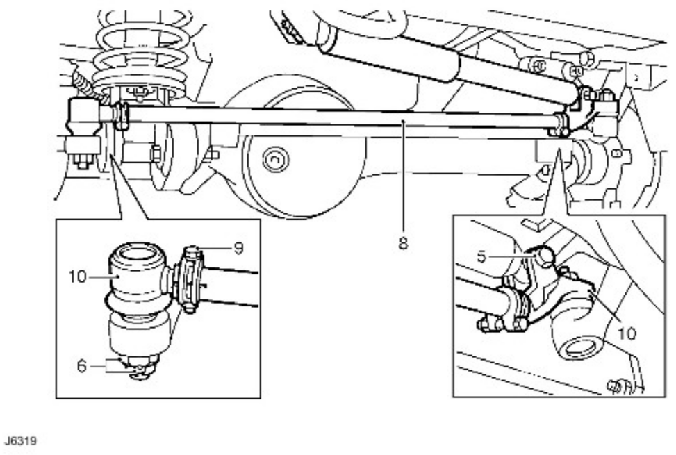
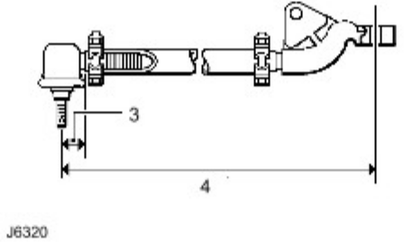
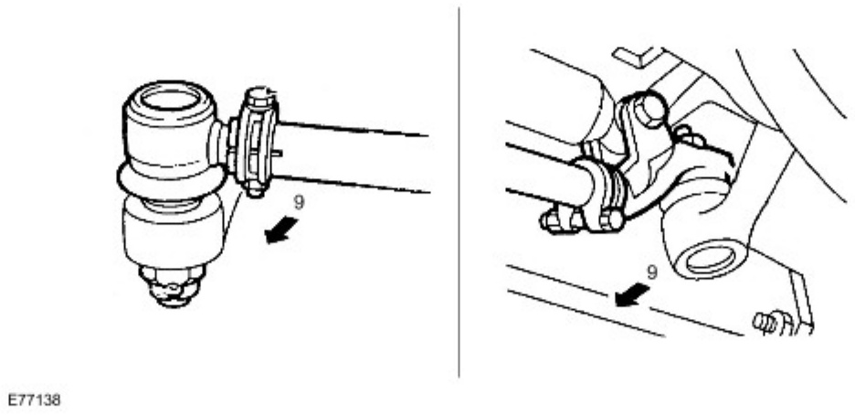
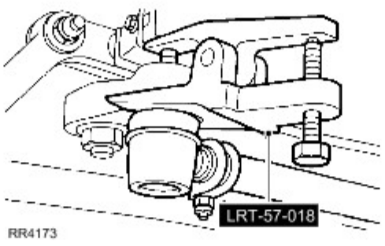
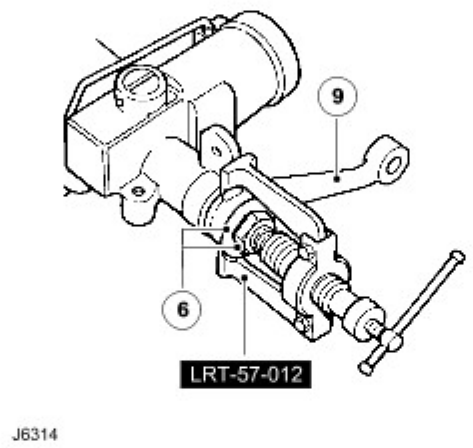

CAUTION: A tie rod that is damaged or bent must be renewed. DO NOT attempt to repair or straighten it.
CAUTION: A tie rod that is damaged or bent must be renewed. DO NOT attempt to repair or straighten it.
Published: May 23, 2008



CAUTION: A tie rod that is damaged or bent must be renewed. DO NOT attempt to repair or straighten it.
Published: Apr 24, 2006

Published: May 30, 2006


CAUTION: A sector shaft arm drag link that is damaged or bent must be renewed. DO NOT attempt repair.

 WARNING: To correct steering wheel deviations greater than ± 5° remove and reposition steering wheel.
WARNING: To correct steering wheel deviations greater than ± 5° remove and reposition steering wheel.
Published: Jun 22, 2006

